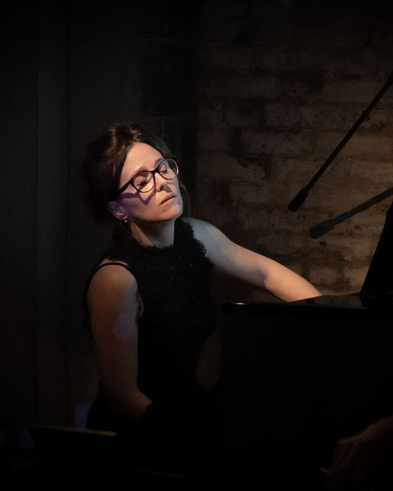

Recital — vídeo completo
Insertar aquí el iframe de YouTube o Vimeo.
Temporada 25/26
Pianista Nueva York / Asturias
«Introspección y abandono musical.»
Mundo Clásico
Intérprete y creadora. Co-fundadora de CreArtBox (Nueva York, 2013) y co-directora del Festival ADAR (Asturias). Del repertorio clásico al encargo contemporáneo, con la escena, la imagen y el territorio como parte de la partitura.

Más de una década construyendo un modelo de concierto donde la música clásica convive con el arte visual, el teatro y la puesta en escena inmersiva — en salas de Nueva York y en pueblos de Asturias.
01
Pianista española · Nueva York
Josefina Urraca nació en España en un entorno musical: su madre, profesora de piano; su hermano, violonchelista; su abuelo, melómano incansable. El piano no fue una elección tardía, fue el idioma de la casa.
Su formación recorre el Conservatorio de Salamanca, la Universidad de Alcalá de Henares, la École Normale Supérieure de Musique «Alfred Cortot» de París y la Escuela Superior de Música Reina Sofía de Madrid, hasta el Máster en la Manhattan School of Music, obtenido en 2014 con las máximas calificaciones.
Desde Nueva York compagina la interpretación con la dirección artística y la pedagogía: programa temporadas, encarga obra nueva a compositores vivos, diseña producciones multidisciplinares y enseña piano.
«Una música clásica que no se queda detrás del atril.»
Solicitar bio y dossier completos02
Dirección artística y producción
Colectivo de música de cámara que interpreta el gran repertorio y estrena obra de compositores vivos con diseño visual, multimedia y teatralidad. Fundado con el flautista y compositor Guillermo Laporta. Elegido por The New Yorker entre sus recomendaciones de arte y música.
Festival internacional e itinerante de artes que revitaliza la Asturias rural: conciertos, encuentros, residencias, encargos a compositores y proyectos site-specific de artistas multidisciplinares que convierten el paisaje en lienzo.
Programa educativo y estudio de piano: clases particulares para todos los niveles, talleres en comunidad y conciertos didácticos que acercan el repertorio clásico y contemporáneo a nuevos públicos.
03
Temporada 2025 / 2026
| Fecha | Ciudad | Sala | Programa | Entradas |
|---|---|---|---|---|
| 00.00por confirmar | New York, NY | CreArt Music Series | Recital de piano | Pronto |
| 00.00por confirmar | Queens, NY | CreArt Music Festival | Cámara + multimedia | Pronto |
| 00.00por confirmar | Asturias, ES | Festival ADAR | Programa site-specific | Pronto |
Agenda en actualización. Para programación cerrada, gira y disponibilidad: escríbeme.
04
Lo que se ha escrito
«Introspección y abandono musical».
Mundo Clásico
Entre las recomendaciones de arte y música.
The New Yorker · CreArtBox
«Un ensemble dedicado a los eventos multidisciplinares».
Time Out · CreArtBox
«Aclamada pianista española presenta su temporada en Nueva York».
Broadway World
05
Vídeo, audio y galería
Insertar aquí el iframe de YouTube o Vimeo.
Producciones de CreArtBox.
Conciertos en el paisaje asturiano.
06
Conciertos · Producción · Clases
¿Hablamos de un programa?
hola@josefinaurraca.comSustituir por la dirección real de contacto.